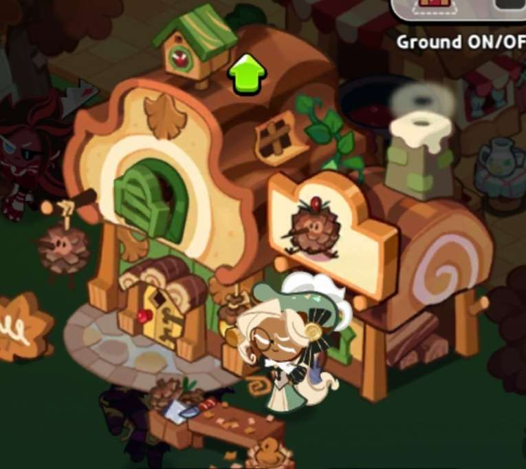

Elcair cookie presents extremely feminine and her actions appear very delicate.
Elcair Cookie can be seen often wearing a beauitful green dress with a corset. While dawning a giant eclair on her head as a hat. Hence the name Eclair Cookie. She has incredibly long hair to go with such beautiful attire.
On top of presenting extremely feminine she also behaves and presents very feminine. While woodworking she will try to keep appearances and not to damage anything on her. This goes for any chore you push Eclair Cookie to do. She will add a very womanly touch to any chore she does which is extremely different from any male cookies and can be seen using the same animations as other female cookies.
